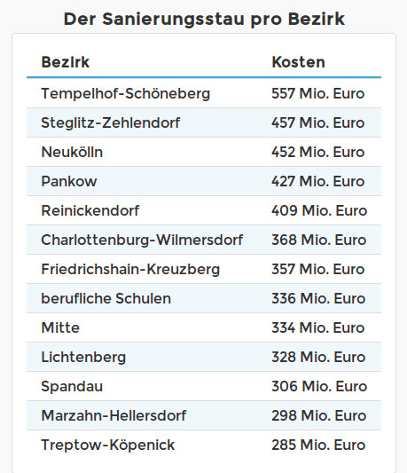

Schulrenovierungen einfordern
Eine Elterninitiative zur Kategorisierung von Renovierungsbedarf an Schulen
schulsanierung.tursics.de
 Der Zustand Berliner Schulgebäude ist seit längerem massiver Kritik durch Schüler und Eltern ausgesetzt. Der Putz
bröckelt, Schulhöfe sind verwahrlost und Sporthallen dringend renovierungsbedürftig. Durch die stetig steigende
Schülerzahl in Berlin wird die Situation in den Schulen weiter verschärft; ein Trend der anhält. Auch die
Printmedien berichten in regelmäßigen Abständen über die schlechten baulichen Zustände einzelner Berliner Schulen,
die eine enorme Belastung für Schüler und Lehrer darstellen. Die Politik hat darauf reagiert und die Investitionen
erhöht. Dennoch scheint nach wie vor unklar, wie viel Geld zur Renovierung der Berliner Schulen benötigt wird. Im
Jahr 2016 erschien bereits der dritte Bericht, der angefordert wurde, um diese Frage zu klären. Die vorläufigen
Zahlen sprechen von rund 4,9 Milliarden Euro für ganz Berlin. In welchen Schulen dieses Geld wofür genau benötigt
wird, schlüsseln die Verantwortlichen allerdings nur bis zur Bezirksebene auf.
Der Zustand Berliner Schulgebäude ist seit längerem massiver Kritik durch Schüler und Eltern ausgesetzt. Der Putz
bröckelt, Schulhöfe sind verwahrlost und Sporthallen dringend renovierungsbedürftig. Durch die stetig steigende
Schülerzahl in Berlin wird die Situation in den Schulen weiter verschärft; ein Trend der anhält. Auch die
Printmedien berichten in regelmäßigen Abständen über die schlechten baulichen Zustände einzelner Berliner Schulen,
die eine enorme Belastung für Schüler und Lehrer darstellen. Die Politik hat darauf reagiert und die Investitionen
erhöht. Dennoch scheint nach wie vor unklar, wie viel Geld zur Renovierung der Berliner Schulen benötigt wird. Im
Jahr 2016 erschien bereits der dritte Bericht, der angefordert wurde, um diese Frage zu klären. Die vorläufigen
Zahlen sprechen von rund 4,9 Milliarden Euro für ganz Berlin. In welchen Schulen dieses Geld wofür genau benötigt
wird, schlüsseln die Verantwortlichen allerdings nur bis zur Bezirksebene auf.
Als Reaktion darauf hat sich als Eltern-Initiative ein Projekt entwickelt, das die Zahlen für jede einzelne Schule übersichtlich und transparent auf einer Internetseite aufschlüsselt. Mit einer interaktiven Karte, wird der Renovierungsbedarf in unterschiedlichen Kategorien für jede einzelne Schule detailliert aufgelistet: beispielsweise für Fenster, Fassade, Barrierefreiheit oder Sporthalle. Für jedes Schulgebäude wird auf diese Weise der aktuelle Sanierungsbedarf als Pop-up-Fenster angezeigt. Wählt man ein Gebäude aus, wird der Renovierungsbedarf wie auf einem Kassenbon detailliert mit Einzelsummen aufgelistet. Um die Zahlen im richtigen Zusammenhang zu verstehen und wie sich die Einzelbeträge genau zusammen setzen, gibt es einen erläuternden Text zusätzlich zur Karte. Außerdem führt die Homepage Listen, welche Bezirke, Schulgebäude, Turnhallen, Außenanlangen etc. die teuersten sind.
 Bisher werden die Daten zum Sanierungsstand unter Verschluss gehalten. Nur die Zahlen aus Lichtenberg wurden bereits bei einer Pressekonferenz präsentiert und heraus gegeben, sodass diese verwendet werden konnten. Zur Verortung der Schulgebäude wurde auf bereits vorhandene, offene Datensätze aus Berlin zurück gegriffen. Mit mehr verfügbaren Daten, soll das Projekt über den Bezirk Lichtenberg hinaus auf ganz Berlin ausgeweitet werden.
In erster Linie profitieren die Kinder, wenn ihre Schule saniert und damit ihre Lernumgebung verbessert wird. Dadurch, dass nun erstmals berlinweit bzw. aktuell lichtenbergweit erkennbar ist, wo überall das Geld bei den Schulen gebraucht wird, wird es für Eltern und Schulleiter einfacher, Investitionen gegenüber Bezirken und dem Land einzufordern. Der Schulsanierungsbedarf ist keine abstrakte Milliarden-Zahl mehr, sondern es ist einfach erkennbar, wo und wieviel Geld für welche Dinge dringend benötigt wird.